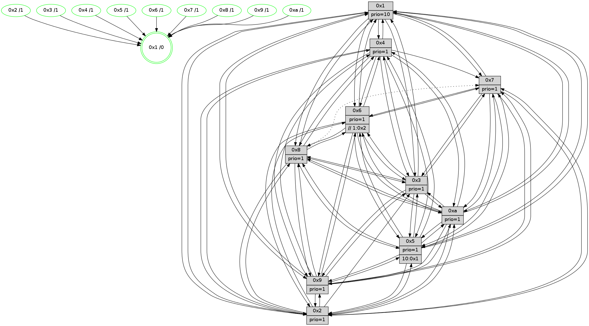

>> << IDX [start] -100 -25 -5 +0 +5 +25 +100 [1475.02164197]
 Previous packets
----------------------------------------------------------------------
1470.292860 beacon01(faad) #0 coord=01,02,03,04,05,06,07,0a,09,08 cycle=688.0ms assoc
-- color-indic=1 64 dd 6c
1470.302842 beacon02(faad) #0 coord=01,02,03,04,05,06,07,0a,09,08 cycle=688.0ms assoc 64 4e 5d
1470.312842 beacon03(faad) #0 coord=01,02,03,04,05,06,07,0a,09,08 cycle=688.0ms assoc 64 34 10
1470.322843 beacon04(faad) #0 coord=01,02,03,04,05,06,07,0a,09,08 cycle=688.0ms assoc 64 43 fa
1470.332844 beacon05(faad) #0 coord=01,02,03,04,05,06,07,0a,09,08 cycle=688.0ms assoc 64 39 b7
1470.342843 beacon06(faad) #0 coord=01,02,03,04,05,06,07,0a,09,08 cycle=688.0ms assoc 64 b7 60
1470.352845 beacon07(faad) #0 coord=01,02,03,04,05,06,07,0a,09,08 cycle=688.0ms assoc 64 cd 2d
1470.362848 beacon0a(faad) #0 coord=01,02,03,04,05,06,07,0a,09,08 cycle=688.0ms assoc 64 bc 26
1470.382849 beacon08(faad) #0 coord=01,02,03,04,05,06,07,0a,09,08 cycle=688.0ms assoc 64 48 bc
1470.395321 [Hello(10): seq=870 sym=6,2,3,8,7,5,9,4,1 sysInfo=hasWarning stat=6:6,15,7,5/2:2,6,10,1/3:7,10,0,15/8:14,10,9,5/7:7,2,6,10/5:11,10,2,2/9:2,3,7,1/4:11,6,3,3/1:10,3,0,1]
1470.398674 [Color(1) seq=617 @0:0 prio=10]
1470.400585 [Hello(7): seq=937 sym=2,3,5,6,9,10,1 sysInfo=hasWarning stat=2:15,2,2,5/3:9,10,3,5/5:7,12,4,4/6:10,7,1,13/9:15,9,15,2/10:3,8,9,7/1:0,6,13,0]
1470.403338 [Hello(8): seq=881 sym=5,2,3,7,9,6,4,10,1 sysInfo=hasWarning stat=5:3,15,14,2/2:10,12,9,13/3:6,14,13,5/7:5,13,1,0/9:10,0,15,5/6:12,13,8,1/4:3,6,6,2/10:13,0,6,5/1:8,3,2,0]
1470.405910 [Hello(4): seq=937 sym=5,8,6,2,3,9,7,10,1 sysInfo= stat=5:2,11,0,3/8:2,4,1,0/6:10,4,10,2/2:8,5,3,2/3:10,0,10,0/9:10,9,5,2/7:5,11,2,0/10:1,0,12,14/1:2,14,2,1]
1470.408729 [Color(4) seq=476 @0:0 prio=1]
1470.410160 [Hello(9): seq=881 sym=2,5,3,4,7,6,8,10,1 sysInfo=hasWarning stat=2:10,7,7,12/5:10,12,8,9/3:8,11,4,6/4:5,6,15,3/7:3,14,15,5/6:7,10,6,1/8:4,13,15,8/10:5,8,2,0/1:10,0,2,1]
1470.414408 [Color(8) seq=536 @0:0 prio=1]
1470.417138 [Color(7) seq=465 @0:0 prio=1]
----------------------------------------------------------------------
1471.080992 beacon01(faad) #0 coord=01,02,03,04,05,06,07,0a,09,08 cycle=688.0ms assoc
-- color-indic=1 64 e9 74
1471.090975 beacon02(faad) #0 coord=01,02,03,04,05,06,07,0a,09,08 cycle=688.0ms assoc 64 7a 45
1471.100973 beacon03(faad) #0 coord=01,02,03,04,05,06,07,0a,09,08 cycle=688.0ms assoc 64 00 08
1471.110975 beacon04(faad) #0 coord=01,02,03,04,05,06,07,0a,09,08 cycle=688.0ms assoc 64 77 e2
1471.120974 beacon05(faad) #0 coord=01,02,03,04,05,06,07,0a,09,08 cycle=688.0ms assoc 64 0d af
1471.130975 beacon06(faad) #0 coord=01,02,03,04,05,06,07,0a,09,08 cycle=688.0ms assoc 64 83 78
1471.140975 beacon07(faad) #0 coord=01,02,03,04,05,06,07,0a,09,08 cycle=688.0ms assoc 64 f9 35
1471.150979 beacon0a(faad) #0 coord=01,02,03,04,05,06,07,0a,09,08 cycle=688.0ms assoc 64 88 3e
1471.170980 beacon08(faad) #0 coord=01,02,03,04,05,06,07,0a,09,08 cycle=688.0ms assoc 64 7c a4
1471.184436 [Hello(1): seq=847 sym=4,2,9,5,10,3,8,6,7 sysInfo=coloring-mode-on,ColoringModeRequestCalled stat=4:1,4,1,4/2:7,0,12,6/9:15,12,12,2/5:3,10,0,10/10:8,3,1,8/3:0,15,1,12/8:11,0,13,5/6:13,10,13,3/7:13,2,4,2]
1471.187158 [Hello(5): seq=938 sym=7,6,4,3,1,9,8,10,2 sysInfo=hasWarning stat=7:4,2,6,1/6:2,6,0,0/4:11,8,14,0/3:10,3,1,3/1:7,12,10,0/9:9,14,4,11/8:7,0,13,6/10:5,1,10,9/2:11,13,0,8]
1471.189857 [Hello(6): seq=938 sym=3,2,5,4,7,9,8,10,1 sysInfo=hasWarning stat=3:11,8,7,0/2:2,6,2,0/5:0,0,10,5/4:8,11,1,9/7:0,15,13,0/9:9,1,3,11/8:7,5,8,8/10:10,8,12,13/1:10,9,2,1]
1471.192549 [Color(10) seq=527 @0:0 prio=1]
1471.197076 [Hello(2): seq=934 sym=4,5,7,6,3,9,8,10,1 sysInfo=hasWarning stat=4:6,15,1,14/5:13,7,6,3/7:5,14,3,2/6:0,1,0,0/3:15,12,6,2/9:4,1,12,10/8:2,12,12,14/10:3,11,14,11/1:1,8,14,0]
1471.200304 [STC(1) #0.258 tree-change,inconsistent-stability,stable,to-color d=0]
1471.207525 [Color(9) seq=497 @0:0 prio=1]
1471.212254 [Color(3) seq=567 @0:0 prio=1]
----------------------------------------------------------------------
1471.869122 beacon01(faad) #0 coord=01,02,03,04,05,06,07,0a,09,08 cycle=688.0ms assoc
-- color-indic=1 64 55 71
1471.879104 beacon02(faad) #0 coord=01,02,03,04,05,06,07,0a,09,08 cycle=688.0ms assoc 64 c6 40
1471.889104 beacon03(faad) #0 coord=01,02,03,04,05,06,07,0a,09,08 cycle=688.0ms assoc 64 bc 0d
1471.899106 beacon04(faad) #0 coord=01,02,03,04,05,06,07,0a,09,08 cycle=688.0ms assoc 64 cb e7
1471.909105 beacon05(faad) #0 coord=01,02,03,04,05,06,07,0a,09,08 cycle=688.0ms assoc 64 b1 aa
1471.919106 beacon06(faad) #0 coord=01,02,03,04,05,06,07,0a,09,08 cycle=688.0ms assoc 64 3f 7d
1471.929105 beacon07(faad) #0 coord=01,02,03,04,05,06,07,0a,09,08 cycle=688.0ms assoc 64 45 30
1471.939111 beacon0a(faad) #0 coord=01,02,03,04,05,06,07,0a,09,08 cycle=688.0ms assoc 64 34 3b
1471.959112 beacon08(faad) #0 coord=01,02,03,04,05,06,07,0a,09,08 cycle=688.0ms assoc 64 c0 a1
1471.970079 [STC(6)->1 #0.258 tree-change,inconsistent-stability,stable,to-color d=1]
1471.971414 [Hello(9): seq=882 sym=2,5,3,4,7,6,8,10,1 sysInfo=hasWarning stat=2:10,7,7,12/5:10,12,8,9/3:8,12,4,6/4:5,6,15,3/7:3,15,15,5/6:7,10,6,1/8:4,14,15,8/10:5,8,2,0/1:11,0,2,1]
1471.974458 [Color(1) seq=618 @0:0 prio=10]
1471.976151 [Hello(10): seq=871 sym=6,2,3,8,7,5,9,4,1 sysInfo=hasWarning stat=6:6,0,7,5/2:3,6,10,1/3:8,11,0,15/8:15,11,9,5/7:8,3,6,10/5:11,10,2,2/9:3,4,7,1/4:12,7,3,3/1:11,4,1,1]
1471.979941 [STC(10)->1 #0.258 tree-change,inconsistent-stability,stable,to-color d=1]
1471.983677 [STC(4)->1 #0.258 tree-change,inconsistent-stability,stable,to-color d=1]
1471.985137 [Hello(8): seq=882 sym=5,2,3,9,6,4,10,1 asym=7 sysInfo=hasWarning stat=5:4,15,14,2/2:11,13,9,13/3:6,15,13,5/9:10,1,15,5/6:13,14,8,1/4:3,6,6,2/10:14,1,6,5/1:9,3,3,0/7:5,14,1,0]
1471.987847 [Hello(7): seq=938 sym=2,3,5,6,9,10,1 sysInfo=hasWarning stat=2:0,2,2,5/3:9,11,3,5/5:8,12,4,4/6:11,8,1,13/9:15,10,15,2/10:4,9,9,7/1:1,6,14,0]
1471.990716 [STC(7)->1 #0.258 tree-change,inconsistent-stability,stable,to-color d=1]
1471.992441 [STC(8)->1 #0.258 tree-change,inconsistent-stability,stable,to-color d=1]
1471.994234 [STC(5)->1 #0.258 tree-change,inconsistent-stability,stable,to-color d=1]
1471.995671 [Color(7) seq=466 @0:0 prio=1]
1471.997751 [Color(4) seq=477 @0:0 prio=1]
1472.000423 [Color(8) seq=537 @0:0 prio=1]
1472.001769 [TreeStatus(5)-.->1 #0.258 tree-change,inconsistent-stability,stable child=1]
----------------------------------------------------------------------
1472.657253 beacon01(faad) #0 coord=01,02,03,04,05,06,07,0a,09,08 cycle=688.0ms assoc
-- color-indic=1 64 91 7f
1472.667234 beacon02(faad) #0 coord=01,02,03,04,05,06,07,0a,09,08 cycle=688.0ms assoc 64 02 4e
1472.677235 beacon03(faad) #0 coord=01,02,03,04,05,06,07,0a,09,08 cycle=688.0ms assoc 64 78 03
1472.687236 beacon04(faad) #0 coord=01,02,03,04,05,06,07,0a,09,08 cycle=688.0ms assoc 64 0f e9
1472.697237 beacon05(faad) #0 coord=01,02,03,04,05,06,07,0a,09,08 cycle=688.0ms assoc 64 75 a4
1472.707237 beacon06(faad) #0 coord=01,02,03,04,05,06,07,0a,09,08 cycle=688.0ms assoc 64 fb 73
1472.717236 beacon07(faad) #0 coord=01,02,03,04,05,06,07,0a,09,08 cycle=688.0ms assoc 64 81 3e
1472.727241 beacon0a(faad) #0 coord=01,02,03,04,05,06,07,0a,09,08 cycle=688.0ms assoc 64 f0 35
1472.747241 beacon08(faad) #0 coord=01,02,03,04,05,06,07,0a,09,08 cycle=688.0ms assoc 64 04 af
1472.759463 [Hello(1): seq=848 sym=4,2,9,5,10,3,8,6,7 mpr= sysInfo=coloring-mode-on,ColoringModeRequestCalled stat=4:1,5,2,4/2:7,0,12,6/9:0,13,12,2/5:3,10,1,11/10:9,3,2,8/3:1,0,1,12/8:12,1,14,5/6:13,10,14,3/7:14,3,5,2]
1472.763183 [Hello(5): seq=939 sym=7,6,4,3,1,9,8,10,2 sysInfo=hasWarning stat=7:4,2,6,1/6:2,6,0,0/4:11,8,14,0/3:10,4,1,3/1:8,12,11,0/9:9,15,4,11/8:7,0,13,6/10:5,1,10,9/2:12,14,0,8]
1472.765695 [Hello(3): seq=939 sym=1,7,6,2,4,8,9,10,5 sysInfo=hasWarning stat=1:8,5,6,0/7:6,13,6,15/6:7,11,10,3/2:4,7,2,0/4:13,4,9,14/8:14,13,14,7/9:4,15,15,1/10:3,8,5,5/5:2,8,3,3]
1472.768884 [Color(9) seq=498 @0:0 prio=1]
1472.770823 [Color(10) seq=528 @0:0 prio=1]
1472.772129 [Hello(6): seq=939 sym=3,2,5,4,7,9,8,10,1 sysInfo=hasWarning stat=3:11,9,7,0/2:3,6,2,0/5:0,0,11,6/4:8,12,2,9/7:1,0,14,0/9:10,2,3,11/8:8,6,9,8/10:11,8,13,13/1:11,10,3,1]
1472.774968 [Color(6) seq=571 @0:0 prio=1 >>1.@2,1.@3,1.@4]
1472.778375 [Hello(2): seq=935 sym=4,5,7,6,3,9,8,10,1 sysInfo=hasWarning stat=4:7,0,2,14/5:13,7,7,4/7:6,15,4,2/6:0,1,1,0/3:15,13,6,2/9:5,2,12,10/8:3,13,13,14/10:4,11,14,11/1:2,9,14,0]
1472.781201 [Color(2) seq=515 @0:0 prio=1]
1472.782687 [Color(3) seq=568 @0:0 prio=1]
1472.787159 [Color(5) seq=475 @0:0 prio=1 >10.@1,1.@2,1.@3,1.@4]
----------------------------------------------------------------------
1473.445382 beacon01(faad) #0 coord=01,02,03,04,05,06,07,0a,09,08 cycle=688.0ms assoc
-- color-indic=1 64 2d 7a
1473.455364 beacon02(faad) #0 coord=01,02,03,04,05,06,07,0a,09,08 cycle=688.0ms assoc 64 be 4b
1473.465364 beacon03(faad) #0 coord=01,02,03,04,05,06,07,0a,09,08 cycle=688.0ms assoc 64 c4 06
1473.475365 beacon04(faad) #0 coord=01,02,03,04,05,06,07,0a,09,08 cycle=688.0ms assoc 64 b3 ec
1473.485365 beacon05(faad) #0 coord=01,02,03,04,05,06,07,0a,09,08 cycle=688.0ms assoc 64 c9 a1
1473.495367 beacon06(faad) #0 coord=01,02,03,04,05,06,07,0a,09,08 cycle=688.0ms assoc 64 47 76
1473.505367 beacon07(faad) #0 coord=01,02,03,04,05,06,07,0a,09,08 cycle=688.0ms assoc 64 3d 3b
1473.515370 beacon0a(faad) #0 coord=01,02,03,04,05,06,07,0a,09,08 cycle=688.0ms assoc 64 4c 30
1473.535371 beacon08(faad) #0 coord=01,02,03,04,05,06,07,0a,09,08 cycle=688.0ms assoc 64 b8 aa
1473.547219 [Hello(9): seq=883 sym=2,5,3,4,7,6,8,10,1 sysInfo=hasWarning stat=2:11,8,7,12/5:10,13,9,10/3:8,13,4,6/4:6,7,0,3/7:4,0,0,5/6:8,11,6,1/8:5,15,0,8/10:6,9,2,0/1:12,1,2,1]
1473.550471 [Color(1) seq=619 @0:0 prio=10]
1473.551856 [Hello(10): seq=872 sym=6,2,3,8,7,5,9,4,1 sysInfo=hasWarning stat=6:7,1,8,5/2:4,7,10,1/3:8,12,0,15/8:0,12,10,5/7:9,4,7,10/5:11,11,3,3/9:3,4,7,1/4:12,8,4,3/1:12,4,1,1]
1473.555893 [Hello(8): seq=883 sym=5,2,3,9,6,4,10,1 asym=7 sysInfo=hasWarning stat=5:5,0,14,3/2:12,14,9,13/3:7,0,13,5/9:11,2,15,5/6:14,15,9,1/4:3,6,6,2/10:14,2,6,5/1:10,4,3,0/7:5,14,1,0]
1473.559730 [Color(8) seq=538 @0:0 prio=1]
1473.566717 [Hello(7): seq=939 sym=2,3,5,6,9,10,1 sysInfo=hasWarning stat=2:1,3,2,5/3:10,12,3,5/5:9,13,4,5/6:12,9,2,13/9:0,11,15,2/10:4,10,9,7/1:2,7,14,0]
1473.570236 [Color(7) seq=467 @0:0 prio=1]
1473.575283 [Color(4) seq=478 @0:0 prio=1]
----------------------------------------------------------------------
1474.233513 beacon01(faad) #0 coord=01,02,03,04,05,06,07,0a,09,08 cycle=688.0ms assoc
-- color-indic=1 64 a8 c4
1474.243495 beacon02(faad) #0 coord=01,02,03,04,05,06,07,0a,09,08 cycle=688.0ms assoc 64 3b f5
1474.253496 beacon03(faad) #0 coord=01,02,03,04,05,06,07,0a,09,08 cycle=688.0ms assoc 64 41 b8
1474.263495 beacon04(faad) #0 coord=01,02,03,04,05,06,07,0a,09,08 cycle=688.0ms assoc 64 36 52
1474.273496 beacon05(faad) #0 coord=01,02,03,04,05,06,07,0a,09,08 cycle=688.0ms assoc 64 4c 1f
1474.283496 beacon06(faad) #0 coord=01,02,03,04,05,06,07,0a,09,08 cycle=688.0ms assoc 64 c2 c8
1474.293496 beacon07(faad) #0 coord=01,02,03,04,05,06,07,0a,09,08 cycle=688.0ms assoc 64 b8 85
1474.303500 beacon0a(faad) #0 coord=01,02,03,04,05,06,07,0a,09,08 cycle=688.0ms assoc 64 c9 8e
1474.323502 beacon08(faad) #0 coord=01,02,03,04,05,06,07,0a,09,08 cycle=688.0ms assoc 64 3d 14
1474.334450 [Hello(1): seq=849 sym=4,2,9,5,10,3,8,6,7 sysInfo=coloring-mode-on,ColoringModeRequestCalled stat=4:1,6,2,4/2:8,1,12,6/9:1,14,12,2/5:4,11,1,11/10:10,4,2,8/3:2,1,1,12/8:13,2,14,5/6:14,11,14,3/7:15,4,5,2]
1474.338519 [Color(10) seq=529 @0:0 prio=1]
1474.340290 [Hello(6): seq=940 sym=3,2,5,4,7,9,8,10,1 sysInfo=hasWarning stat=3:11,10,7,0/2:4,7,2,0/5:0,1,11,6/4:8,13,2,9/7:2,1,14,0/9:11,2,3,11/8:9,7,9,8/10:12,8,13,13/1:12,11,3,1]
1474.343120 [Color(6) seq=572 @0:0 prio=1 >>1.@2,1.@3,1.@4]
1474.345652 [Hello(5): seq=940 sym=7,6,4,3,1,9,8,10,2 sysInfo=hasWarning stat=7:5,2,6,1/6:2,6,0,0/4:12,9,14,0/3:10,4,1,3/1:9,13,11,0/9:10,15,4,11/8:8,1,13,6/10:6,1,10,9/2:12,14,0,8]
1474.348497 [Color(9) seq=499 @0:0 prio=1]
1474.350059 [Color(5) seq=476 @0:0 prio=1 >10.@1,1.@2,1.@3,1.@4]
1474.351889 [Hello(3): seq=940 sym=1,7,6,4,8,9,10,5 sysInfo=hasWarning stat=1:9,6,6,0/7:7,14,6,15/6:7,11,10,3/4:13,5,9,14/8:15,14,14,7/9:5,15,15,1/10:4,8,5,5/5:2,9,3,3]
1474.356187 [Color(3) seq=569 @0:0 prio=1]
1474.359417 [Hello(2): seq=936 sym=4,5,7,6,3,9,8,10,1 sysInfo=hasWarning stat=4:7,1,2,14/5:13,8,7,4/7:7,0,4,2/6:0,1,1,0/3:15,14,6,2/9:6,2,12,10/8:4,14,13,14/10:5,11,14,11/1:3,10,14,0]
1474.363833 [Color(2) seq=516 @0:0 prio=1]